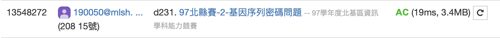

如果可能性只有一種，那就是LCS的標準做法。
—若data1[i-1]==data2[j-1]，status[i][j]=status[i-1][j-1]+1
—若data1[i-1] != data2[j-1]，status[i][j]=max(status[i-1][j],status[i][j-1])
—>status[len(data1)][len(data2)]即為LCS長度。
但是題目要求是「以第一個序列靠左字母先出現的解」，所以要先紀錄status[i][j]的值是從哪個方向來的，例如左=1，上=2，左上=3，這時就要建立一個名為path的list去紀錄，之後再由path[-1][-1]依照方向往回推。
| status | j | 0 | 1 | 2 | 3 |
| i | data2 | B | A | C | |
| 0 | data1 | 0 | 0 | 0 | 0 |
| 1 | A | 0 | 0 | 1 | 1 |
| 2 | B | 0 | 1 | 1 | 1 |
| 3 | C | 0 | 1 | 1 | 2 |
| path | j | 0 | 1 | 2 | 3 |
| i | data2 | B | A | C | |
| 0 | data1 | 0 | 0 | 0 | 0 |
| 1 | A | 0 | 2 | 3 | 1 |
| 2 | B | 0 | 3 | 2 | 2 |
| 3 | C | 0 | 2 | 2 | 3 |
建表之後就會發現，如果path[i][j]=3，則data1[i-1]=data2[j-1]，意思是有可能是答案要求的LCS，但是要怎麽知道答案要求的是哪一個？在建path時，如果path[i][j]左跟上的值都一樣，那就優先選上，因為這樣會用接近data1的左邊，才能滿足「以第一個序列靠左字母先出現的解」的需求。
